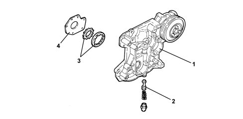
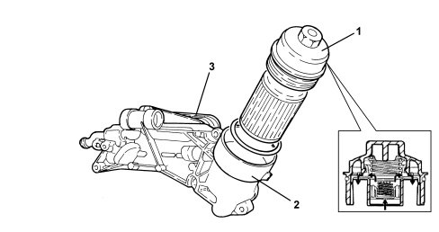

INTRODUCTION - ENGINE LUBRICATION
- Path
- Descriptions > 10 ENGINE > 1084 ENGINE LUBRICATION > INTRODUCTION - ENGINE LUBRICATION
- Kind
- system description
- Applies to
- engines: 1.8; all production periods
- Interactive page
- https://sloeber94.github.io/elrnDB-fCrm/en/#/194002413
Applies to: engines: 1.8; all production periods
ENGINE OIL PUMP
The two main lubrication ducts are supplied by means of channels produced through fusion behind the engine block. These main ducts supply the entire engine lubrication system, bearings, cylinder head and camshaft timing variation system.

1. Oil pump - crankcase front cover integrated module
2. Relief valve
3. Oil pump rotors
4. Oil pump rear cover
OIL FILTER
The oil filter cartridge housing is part of a compact, aluminium alloy module which includes a water-oil heat exchanger.
Fitting the module on the left side of the engine block allows a direct connection with the water circuit assisting the rapid heating of the oil whilst the engine is warming up and a reduced oil pressure loss.

1. Engine oil filter cover
2. Engine oil filter mounting
3. Engine oil cooling heat exchanger